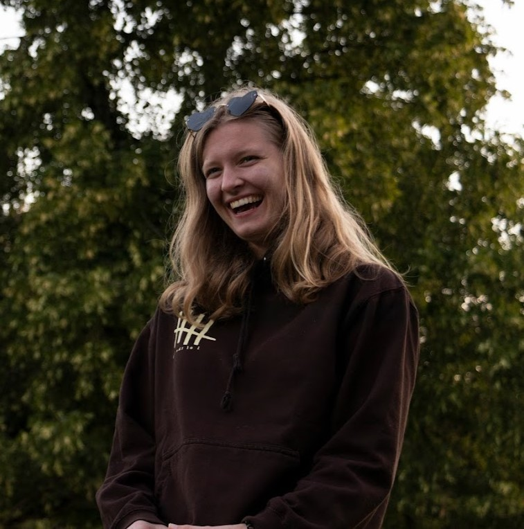

Ik zal mezelf kort voorstellen! Ik ben Inne De Baerdemaeker, 22 jaar oud en een echt familiemens met ook een groot hart voor dieren, van klein tot groot.
Mijn creativiteit laat ik het liefst de vrije loop in kleine schetsen en tekeningen, of ik kruip lekker weg in mijn bed met een goed boek.
Sporten doe ik ook graag, al zoek of doe ik dat op twee heel verschillende manieren. Ik kijk super graag naar ijshockey en kan mezelf helemaal verliezen in de wedstrijd, maar mijn echte passie ligt al 12 jaar bij dansen. Het mooie en het leuke aan dansen vind ik het groepsgevoel. Je kunt op jezelf zo'n goede danser zijn maar, een choreografie wordt pas echt prachtig als je samenwerkt als één team.
Die groepsgeest neem ik overal mee naartoe. Verder ben ik van nature een nette werker, een echte planner en een tikkeltje perfectionistisch. Ik zorg er graag voor dat alles tot in de puntjes klopt.

Sint-donatus
Moderne talen - wetenschappen (2016 - 2022)
Arteveldehogeschool
Grafische en digitale media (2022 - 2025)
Thomas More
Digital experience design (2025 - heden)